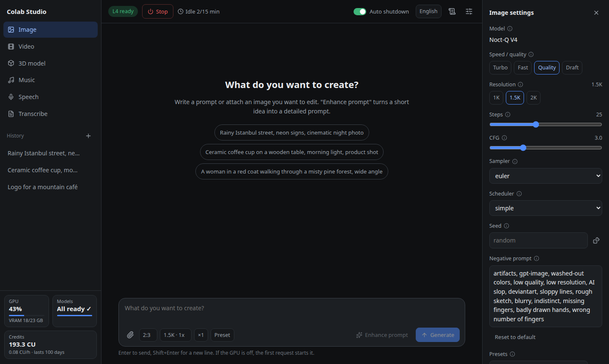
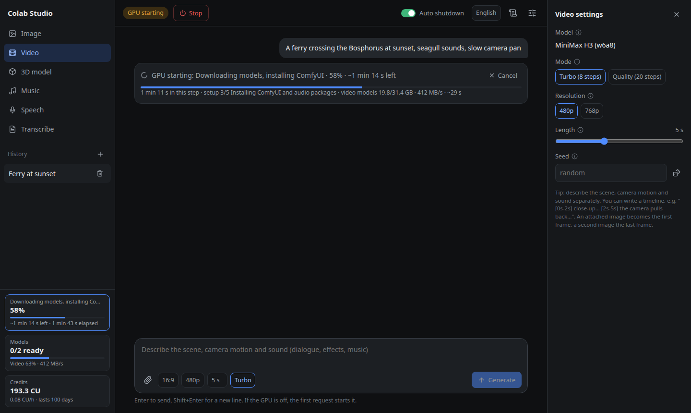
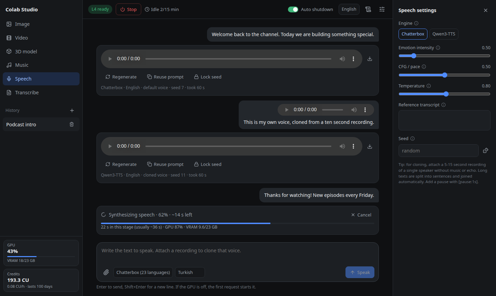
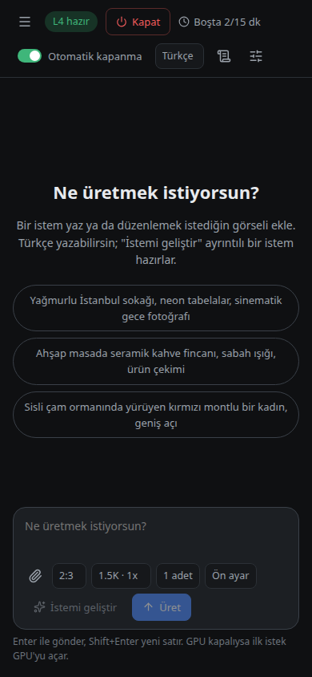

make video, music and voices on colab
A self-hosted studio that rents a Google Colab L4 only while working.
What does it make?



which models run out of the box?
Each is a Hugging Face file in models.toml; swap it and restart.
| mode | default model | what you get |
|---|---|---|
| image | Noct-Q V4 + turbo LoRA | Text to image, and edits |
| prompt | Qwen3.5 9B prompt enhancer | A short idea, written out |
| video | MiniMax H3 | Video with dialogue and sound |
| music | YuE2 | Songs with vocals |
| speech | Chatterbox, Qwen3-TTS | Text-to-speech and voice cloning |
| transcribe | Whisper large-v3-turbo | Audio files to text |
| 3d | TRELLIS.2 | A textured GLB from one image |
when does the gpu cost you?
Only between your first prompt and the release.
- start
- jobs run
- idle
- idle overnight
- still spending
- first prompt
- L4 starts
- jobs queue and run
- 15 idle minutes
- L4 released
what do you need?
- linux
- Or Docker. Windows and macOS are untested.
- colab compute units
- Pro, Pro+ or pay as you go.
- five tools
git,curl,ssh,tar,python3.- a hugging face token
- Optional, for faster downloads.
before you install
Does the free Colab tier work?
No. The free tier does not offer L4 GPUs. You need Colab compute units: Colab Pro, Pro+ or pay as you go.
Can I use a T4 or an A100 instead?
No. The workflows, VRAM budgets and time estimates were all measured on the L4, so it is the only GPU supported.
Can I open it from my phone?
Yes: through an SSH tunnel, by IP on a trusted network, or on your own domain behind nginx with HTTPS and a password, set up by deploy/setup-nginx.sh.
Where do my results live?
On your own machine. Results are copied back from the GPU and stay after it is released. Chats older than 30 days are deleted automatically.
Can Claude Code use it?
Yes. The mcp folder contains an MCP server, so Claude Code or Claude Desktop can start the GPU, generate media, wait for jobs and look at the results.
Is it made by Google?
No. Colab Studio is an independent open-source project under AGPL-3.0. It uses Google’s official Colab CLI.
how do you install it?
$ git clone https://github.com/berkeduruu/colab-studio.git
$ cd colab-studio
$ ./install.sh && ./run.shThe installer signs you in to Colab, then open 127.0.0.1:8190 and send a prompt. Prefer containers? See the Docker setup.
